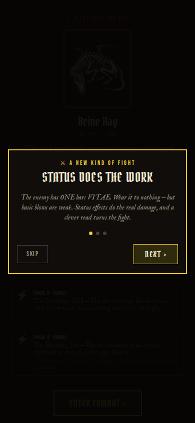
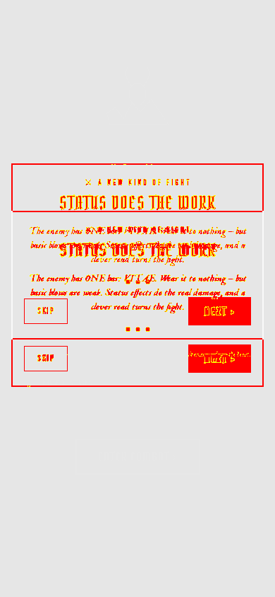

2026-08-11
The retheme batch closed out its narrative half — the fishing village
Phase 44f — named the Drowned Parish
What the Fishing Village map's region display string becomes "the
Why spec 34's own worked naming example (NL-18: "a feature plus a
`30dbab98` (brief) `4b9083c1` (ship) `b81b73ce` (row)
Drowned Parish," grounded in the drowned-parish enemy estate's own fiction ("the coastal parishes the sea took"). mapId, node ids, the continent label, and every other identifier stay frozen — display name only. fact that went wrong") names this exact pattern; the fiction anchor was already sitting in the enemy roster, unclaimed until now.
Phase 44g — coastal-village dialogue retheme
What rethemed all eight coastal NPC dialogue trees (Coastal
Why the brief claimed no test asserted on verbatim dialogue text
`440ced7d` (brief) `74f66110` (ship) `4eb5aee4` (row)
Beggar, Captain Blackwater, Fisherman's Daughter, Village Healer, Dockworker's Union Leader, Merchant's Widow) against spec 34 §2 — dropped exclamation marks and [Moral meter ±N] bracket readouts, cold/archaic register throughout. Renamed the quest-board storyBeat string to match 44f. All flags/deltas/node-ids/requires gates stay byte-for-byte unchanged; three tests that asserted on literal old prose (not just isolated words) got their assertions updated to the new equivalent phrases. — that didn't hold under a real pass, so the ship fixed the tests it broke rather than leaving the retheme half-done.
PR #193 — strip the prose off the card face
What a direct owner report ("there's not so much verbage on the
Why owner-directed declutter — the card details layer already
`44251587` (#193 un-routed direct PR)
cards? The card details already define the keywords") took the authored PAID sentence, the type strip, and the printed die lines off the card face. The face is now glance-only: art, name, FREE glyph, rarity tag, and a KEYWORD / value pair. Nothing is lost — the inspect overlay regains the full metadata, die lines, and read triplet it used to carry before 07-16. Visual baselines re-approved (7 matched / 0 differing); labyrinth got a baseline for the first time (prior debt, not a regression). owns the keyword definitions, so repeating them on the face read as redundant. an actual product change; character/exploration/inventory/root/ labyrinth differ on whole-page text/layout offsets from a Chrome-build difference on this container, not from this PR's diff.
combat-encounter — the only baseline of the six that carries


PR #194 — breathe the foe, retire the double entry gate, name the enemy's turn
What three owner-reported combat-UI asks landed together. (1) the
Why three separate UI reports from the same session (2026-08-10),
`a251a325` (#194 un-routed direct PR)
foe now idles with a non-harmonic scale-and-float breath, boss-weighted slower and deeper. (2) entering a fight used to ask twice — an ENGAGE/FLEE modal over a procedural SVG, then ENTER COMBAT over the real painting; the modal now auto-engages on mount and the reveal is the single commit gate, with WITHDRAW moved onto it. (3) the foe's resolved threat phase now renders as a card — intent glyph, action sentence, payload lines — with a DENIED strikethrough when a phase is hindered, so the player's control has visible proof. landed as one bounded PR since all three touch the same encounter entry path.
Oversight — drained five needs-user-call threads, filed the minigame-consolidation candidate
What a same-day /oversight session ruled on five standing
Why the AUDIT/CRITIQUE backlog had accumulated enough ruled-but-
`7a016524` (#195)
threads in one sitting: card evolution unpark trigger (design-now, no phase yet), the "Axiomancer" product name under the whole-product pivot (reconsider — opens a dedicated naming session, current name holds until then), inn placement (no — fishing-village-only stays complete), the live-combat exit path (route through endCombat, queued as Phase 54), and the Cloudflare Pages hosted surface (incidental, scope it down via /iterate). Also filed a new candidate — T's own framing — to fold treasure/quest/rest/narration into one plain "encounter" choice+effect shape and retire the Gathering, Quest Board, and Loot Cache minigames entirely; combat stays a distinct system. unrecorded decisions that draining them in one session beats letting /march ticks keep re-reading stale open threads.
While you were out
| Tick | Verb | Outcome |
|---|---|---|
| 08-10 13:50 | march | success — critique pass 22 (0 findings) |
| 08-10 15:51 (direct) | PR #194 | merged — combat UI (foe breath, entry gate, enemy card) |
| 08-10 18:24 (direct) | PR #193 | merged — card face declutter |
| 08-10 19:26 | march | success — phase 44f (Drowned Parish) |
| 08-10 20:09 (direct) | /oversight | merged — PR #195, backlog drain |
| 08-11 02:32 | march | success — phase 44g brief |
| 08-11 07:43 | march | success — phase 44g ship |
plan/AUDIT.md: no new rows filed tonight; 49 pending (down from 57
— the oversight session drained the FLEE/tab-bar row via #194 and several ruled-but-unrecorded threads).
plan/PHASE_CANDIDATES.md: 34 pending (up 1 — the minigame-
consolidation candidate filed via /oversight, not /expand).
plan/CRITIQUE.md: pass 22 (commitd03f38e7) — 0 fresh findings,
first pass since Phase 44e; 19 pending rows, unchanged.
triage:needs-user/loop:doissues: 0 open. No open PRs.- Deploy: nothing to check — HEAD (
4eb5aee4) is a docs/plan-only
tick, no gated verify-* workflow triggered for its paths.
- Breadth check (
npm --workspace axiomancer-mobile run e2e:minigames):
GREEN — all six legs (hazard, combat, gathering, encounter- routing, exploration↔combat-prelude roundtrip, upgradeable-dice) ALL PASS. The FLEE/tab-bar regression flagged the last two nights is gone, drained by #194's entry-path rework.
Needs you
Five threads closed by tonight's /oversight (see the infra card above); two of those rulings open follow-on sessions that haven't run yet — the product-name reconsideration and the card-evolution design pass — neither blocks any queued phase. No open [needs-user-call] rows, no blocked build-plan rows.
Tuning proposals
baseline:check opened this cycle stale by 1 mechanics-source commit (74f66110, phase 44g — dialogue-only). Re-measured with the reduced-nightly pass and committed at 4eb5aee4.
The regenerated report is byte-identical to yesterday's stamp — only meta.generatedAt/meta.commit changed. Expected result for a mechanics-source commit that only rewrote NPC dialogue strings; the combat sim never touches those files. CQI reads unchanged: early 0.746, mid 0.739, late 0.814, impossible 0.820. No band moved; nothing to file.
Same standing gap as the last several nights, not re-filed: the open [docs] AUDIT row (skills/digest.md §3b still reads the retired win-rate doctrine curve) still needs a design ruling before §3b can be rewritten against CQI directly — read blind against that curve, tonight's numbers (early 54.5% / mid 8.3% / late 0% / impossible 0%) would file as a doctrine violation. They aren't one: Phase 43 retired win rate as a grading term outright, and this exact reading has been byte-identical and already-tracked (the "Post-D8 flag-on curve repair" → Phase 39 → Phase 43 chain) since before that phase shipped. This digest read combatQuality.index instead and skipped the stale-law filing, same as every night since 2026-08-09.
Today's intent
A split day — half narrative close-out (44f/44g finish the place and voice half of the retheme), half owner-directed combat UI that arrived outside the loop entirely. The breadth check went green for the first time in two nights (the FLEE regression is gone), and the baseline confirmed a fourth straight byte-identical read. The standing /oversight backlog is now genuinely drained rather than re-read and reconfirmed — a rarer outcome than it sounds, going by how many digests before this one found the same five threads still open.